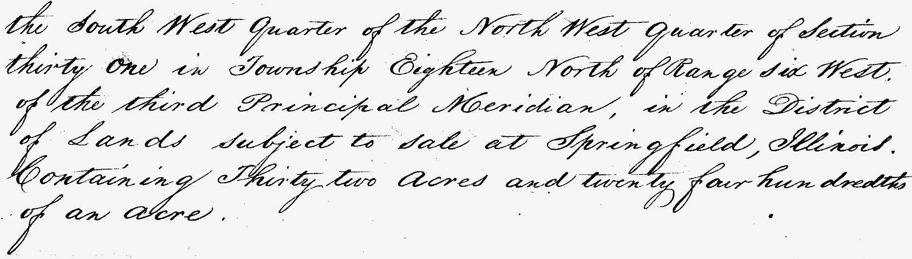

Philemon's land near New Salem, IL
The map below shows an overlay of an 1822 survey of Township 18 north of range 6 west in Menard County, Illinois.
Philemon's 1846 land purchase certificate describes the extent of the land as follows:
the South West quarter of the North West quarter of Section thirty one of Township Eighteen North of Range six West of the third Principal Meridian, in the District of lands subject to the sale at Springfield, Illinois, containting Thirty two acres and twenty four hundrends of an acre.
Based on the above, we beleive Philmon's land is that shown in red below.